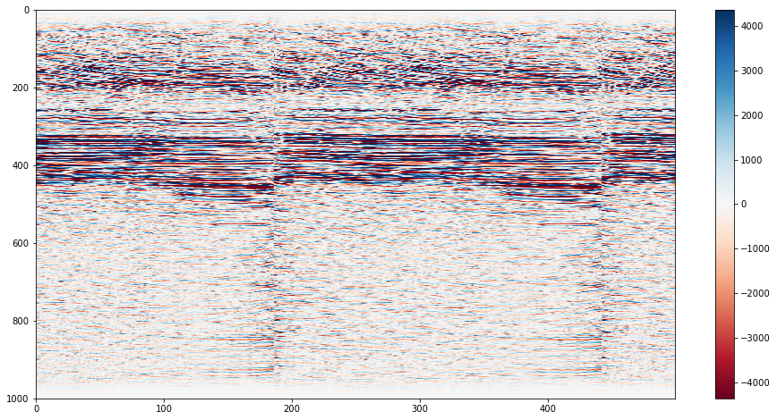
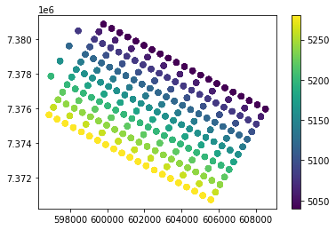
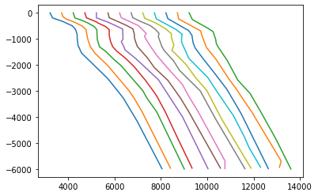

#Load the required modules
import shapefile
#NOTE: Weirdly and confusingly, this package is called "pyshp" but you call it via the name "shapefile"Useful Python packages for different data types
Questions
- What are libraries and packages?
- How can I load tabular data into Python?
- How can I load shapefiles?
- How can I load segy and las data?
Objectives
- Learn how to deal with specialty data types.
- Learn about pandas, pyshp, lasio, obspy.
Python can deal with basically any type of data you throw at it. The open source python community has developed many packages that make things easy. Today we will look at pyshp (for dealing with shapefiles), pandas (great for tables and time series), lasio (for las format well log data) and obspy (a highly featured seismic data processing suite) packages.
Data for this exercised was downloaded from http://www.bom.gov.au/water/groundwater/explorer/map.shtml
Shapefiles
Shapefiles are a very common file format for GIS data, the standard for which is developed and maintained by ESRI, the makers of the ArcGIS software. Shapefiles collect vectors of features, such as points, lines, polygons. The “file” is actually a misnomer - if you look at a single “shapefile” on your machine using a file explorer, you can see that it’s actually made up of several files, three of which are mandatory, and others which may/may not be there.
#help(shapefile)
#Or check out the help pages https://github.com/GeospatialPython/pyshp#Set the filename
boreshape='../data/shp_torrens_river/NGIS_BoreLine.shp'
#read in the file
shapeRead = shapefile.Reader(boreshape)
#And save out some of the shape file attributes
recs = shapeRead.records()
shapes = shapeRead.shapes()
fields = shapeRead.fields
Nshp = len(shapes)print(Nshp) #print the Number of items in the shapefile7635fields #print the fields[('DeletionFlag', 'C', 1, 0),
['HydroID', 'N', 10, 0],
['HydroCode', 'C', 30, 0],
['BoreID', 'N', 10, 0],
['TopElev', 'F', 19, 11],
['BottomElev', 'F', 19, 11],
['HGUID', 'N', 10, 0],
['HGUNumber', 'N', 10, 0],
['NafHGUNumb', 'N', 10, 0],
['SHAPE_Leng', 'F', 19, 11]]recs[3] #print the first record, then this is a list that can be subscripted furtherRecord #3: [32002002, '652800645', 30027773, -147.26, -154.26, 31000045, 1044, 125005, 0.0]shapes[1].points #print the point values of the first shape[(591975.5150000006, -3816141.8817), (591975.5150000006, -3816141.8817)]shapeRead.shapeTypeName 'POLYLINEZ'rec= shapeRead.record(0)
rec['TopElev']6.74Challenge.
- Look at the data above. It provides the coordinates of the wells as points.
- How many coordinates are provided for each well? Why do you think this is?
- What is the Bottom Elevation of the 300th record?
Solution
There are two coordinates. But they are duplicated.
rec= shapeRead.record(299)
rec['BottomElev']
#or
recs[299][4]#Here is a slightly neater way to read in the data, but it looks confusing at first.
#But we will need it in this form for our next exercise.
#This type of assignment is known as "list comprehension"
#fields = [x[0] for x in shapeRead.fields][1:]
#Break this down line by line
#for x in shapeRead.fields:
# print(x)
#Now just print the 1st (0th) column of each list variable
#for x in shapeRead.fields:
# print(x[0])
#But we want to save these values in a list (not just print them out).
#fields=[]
#for x in shapeRead.fields:
# fields.append(x[0])
#And we don't want the DeletionFlag field, so we need to just get all the values except the first
#fields=fields[1:]
#fields = [x[0] for x in shapeRead.fields][1:]
#Do a list comprehnsion for the the other variable too
#shps = [s.points for s in shapeRead.shapes()]Shapefiles are not a native python format, but the community have developed tools for exploring them. The package we have used “pyshp” imported with the name “shapefile” (for some non-consistent weird reason), is one example of working with shapefiles. Alternatives exist.
Dataframes and table manipulation
Pandas is one of the most useful packages (along with probably numpy and matplotlib). We will use it several times throughout the course for data handling and manipulation.
#As before, read in the shapefile
boreshape='../data/shp_torrens_river/NGIS_BoreLine.shp'
#Read the shapefile attributes to variables
shapeRead = shapefile.Reader(boreshape)
fields = [x[0] for x in shapeRead.fields][1:]
shps = [s.points for s in shapeRead.shapes()]
recs= shapeRead.records()import pandas
#Now convert the variables to a pandas dataframe
df = pandas.DataFrame(columns=fields, data=recs)
#See more details at the docs: https://pandas.pydata.org/pandas-docs/stable/reference/api/pandas.DataFrame.htmldf| HydroID | HydroCode | BoreID | TopElev | BottomElev | HGUID | HGUNumber | NafHGUNumb | SHAPE_Leng | |
|---|---|---|---|---|---|---|---|---|---|
| 0 | 32001999 | 652800645 | 30027773 | 6.74 | -74.26 | 31000043 | 1042 | 104005 | 0.0 |
| 1 | 32002000 | 652800645 | 30027773 | -74.26 | -125.26 | 31000109 | 1108 | 110002 | 0.0 |
| 2 | 32002001 | 652800645 | 30027773 | -125.26 | -147.26 | 31000045 | 1044 | 125005 | 0.0 |
| 3 | 32002002 | 652800645 | 30027773 | -147.26 | -154.26 | 31000045 | 1044 | 125005 | 0.0 |
| 4 | 32002003 | 652800645 | 30027773 | -154.26 | -168.26 | 31000045 | 1044 | 125005 | 0.0 |
| ... | ... | ... | ... | ... | ... | ... | ... | ... | ... |
| 7630 | 32145557 | 662810075 | 30057044 | 102.62 | 90.89 | 31000139 | 1138 | 100001 | 0.0 |
| 7631 | 32145558 | 662810075 | 30057044 | 103.08 | 102.62 | 31000139 | 1138 | 100001 | 0.0 |
| 7632 | 32145559 | 662813065 | 30060034 | 535.08 | 451.08 | 31000026 | 1025 | 134001 | 0.0 |
| 7633 | 32145560 | 662813065 | 30060034 | 451.08 | 171.08 | 31000014 | 1013 | 134001 | 0.0 |
| 7634 | 32145561 | 662814687 | 30061656 | 444.30 | 432.30 | 31000014 | 1013 | 134001 | 0.0 |
7635 rows × 9 columns
#Add a new column called "coords" to the DataFrame, fill it with what is in "shps"
df['coords'] = shps
#Alternatively, you can use the "assign" method
#df = df.assign(coords=shps)df| HydroID | HydroCode | BoreID | TopElev | BottomElev | HGUID | HGUNumber | NafHGUNumb | SHAPE_Leng | coords | |
|---|---|---|---|---|---|---|---|---|---|---|
| 0 | 32001999 | 652800645 | 30027773 | 6.74 | -74.26 | 31000043 | 1042 | 104005 | 0.0 | [(591975.5150000006, -3816141.8817), (591975.5... |
| 1 | 32002000 | 652800645 | 30027773 | -74.26 | -125.26 | 31000109 | 1108 | 110002 | 0.0 | [(591975.5150000006, -3816141.8817), (591975.5... |
| 2 | 32002001 | 652800645 | 30027773 | -125.26 | -147.26 | 31000045 | 1044 | 125005 | 0.0 | [(591975.5150000006, -3816141.8817), (591975.5... |
| 3 | 32002002 | 652800645 | 30027773 | -147.26 | -154.26 | 31000045 | 1044 | 125005 | 0.0 | [(591975.5150000006, -3816141.8817), (591975.5... |
| 4 | 32002003 | 652800645 | 30027773 | -154.26 | -168.26 | 31000045 | 1044 | 125005 | 0.0 | [(591975.5150000006, -3816141.8817), (591975.5... |
| ... | ... | ... | ... | ... | ... | ... | ... | ... | ... | ... |
| 7630 | 32145557 | 662810075 | 30057044 | 102.62 | 90.89 | 31000139 | 1138 | 100001 | 0.0 | [(605865.9246000014, -3830429.3729999997), (60... |
| 7631 | 32145558 | 662810075 | 30057044 | 103.08 | 102.62 | 31000139 | 1138 | 100001 | 0.0 | [(605865.9246000014, -3830429.3729999997), (60... |
| 7632 | 32145559 | 662813065 | 30060034 | 535.08 | 451.08 | 31000026 | 1025 | 134001 | 0.0 | [(612545.5916999988, -3832402.8148999996), (61... |
| 7633 | 32145560 | 662813065 | 30060034 | 451.08 | 171.08 | 31000014 | 1013 | 134001 | 0.0 | [(612545.5916999988, -3832402.8148999996), (61... |
| 7634 | 32145561 | 662814687 | 30061656 | 444.30 | 432.30 | 31000014 | 1013 | 134001 | 0.0 | [(635716.0604999997, -3816751.5364999995), (63... |
7635 rows × 10 columns
Pandas more frequently is used to directly read in tables. So let’s read in the csv data that came with shapefile (as this gives us some additional fields not stored in the shapefile that we can explore.
#read in the data
log_data=pandas.read_csv("../data/shp_torrens_river/NGIS_LithologyLog.csv",usecols=list(range(0,13)))
#What is the "usecols" variable equal to?
#Try reading the data without using the usecols option, can you solve the error?log_data # print the first 30 and last 30 rows| OBJECTID | BoreID | HydroCode | RefElev | RefElevDesc | FromDepth | ToDepth | TopElev | BottomElev | MajorLithCode | MinorLithCode | Description | Source | |
|---|---|---|---|---|---|---|---|---|---|---|---|---|---|
| 0 | 1769789 | 30062892 | 662815923 | 57.25 | NGS | 18.0 | 19.5 | 39.25 | 37.75 | CLYU | None | Clay | SAGeodata |
| 1 | 1769790 | 30062892 | 662815923 | 57.25 | NGS | 19.5 | 22.0 | 37.75 | 35.25 | ROCK | None | Rocks and sand | SAGeodata |
| 2 | 1769791 | 30062892 | 662815923 | 57.25 | NGS | 22.0 | 24.0 | 35.25 | 33.25 | CLYU | None | Clay | SAGeodata |
| 3 | 1770725 | 30141910 | 662816624 | 4.0 | NGS | 0.0 | 6.0 | 4.0 | -2.0 | None | None | No sample | SAGeodata |
| 4 | 1770726 | 30141910 | 662816624 | 4.0 | NGS | 6.0 | 15.0 | -2.0 | -11.0 | CLYU | None | Clay - orange-red grey, mottled; stiff-sticky.... | SAGeodata |
| ... | ... | ... | ... | ... | ... | ... | ... | ... | ... | ... | ... | ... | ... |
| 70168 | 4120345 | 30304039 | 662829228 | None | UNK | 9.0 | 10.0 | None | None | CLYU | None | Sandy clay | SAGeodata |
| 70169 | 4120346 | 30304039 | 662829228 | None | UNK | 10.0 | 12.5 | None | None | SAND | None | Clay sand | SAGeodata |
| 70170 | 4120347 | 30304050 | 652802882 | None | UNK | 0.0 | 0.3 | None | None | FILL | None | Fill | SAGeodata |
| 70171 | 4120348 | 30304050 | 652802882 | None | UNK | 0.3 | 0.8 | None | None | SAND | None | Clayey sand | SAGeodata |
| 70172 | 4120349 | 30304050 | 652802882 | None | UNK | 0.8 | 3.5 | None | None | SAND | None | Sand | SAGeodata |
70173 rows × 13 columns
# add a new column as a function of existing columns
log_data['Thickness'] = log_data.ToDepth - log_data.FromDepthtype(log_data) # see what Python type the DataFrame ispandas.core.frame.DataFramelog_data.head(3) # print the first 3 rows| OBJECTID | BoreID | HydroCode | RefElev | RefElevDesc | FromDepth | ToDepth | TopElev | BottomElev | MajorLithCode | MinorLithCode | Description | Source | Thickness | |
|---|---|---|---|---|---|---|---|---|---|---|---|---|---|---|
| 0 | 1769789 | 30062892 | 662815923 | 57.25 | NGS | 18.0 | 19.5 | 39.25 | 37.75 | CLYU | None | Clay | SAGeodata | 1.5 |
| 1 | 1769790 | 30062892 | 662815923 | 57.25 | NGS | 19.5 | 22.0 | 37.75 | 35.25 | ROCK | None | Rocks and sand | SAGeodata | 2.5 |
| 2 | 1769791 | 30062892 | 662815923 | 57.25 | NGS | 22.0 | 24.0 | 35.25 | 33.25 | CLYU | None | Clay | SAGeodata | 2.0 |
log_data.index # “the index” (aka “the labels”).
#Pandas is great for using timeseries data, where the index can be the timestampsRangeIndex(start=0, stop=70173, step=1)log_data.columns # column names (which is “an index”)Index(['OBJECTID', 'BoreID', 'HydroCode', 'RefElev', 'RefElevDesc',
'FromDepth', 'ToDepth', 'TopElev', 'BottomElev', 'MajorLithCode',
'MinorLithCode', 'Description', 'Source', 'Thickness'],
dtype='object')log_data.dtypes # data types of each columnOBJECTID int64
BoreID int64
HydroCode int64
RefElev object
RefElevDesc object
FromDepth float64
ToDepth float64
TopElev object
BottomElev object
MajorLithCode object
MinorLithCode object
Description object
Source object
Thickness float64
dtype: objectlog_data.shape # number of rows and columns(70173, 14)log_data.values # underlying numpy array — df are stored as numpy arrays for efficiencies.array([[1769789, 30062892, 662815923, ..., 'Clay', 'SAGeodata', 1.5],
[1769790, 30062892, 662815923, ..., 'Rocks and sand', 'SAGeodata',
2.5],
[1769791, 30062892, 662815923, ..., 'Clay', 'SAGeodata', 2.0],
...,
[4120347, 30304050, 652802882, ..., 'Fill', 'SAGeodata', 0.3],
[4120348, 30304050, 652802882, ..., 'Clayey sand', 'SAGeodata',
0.5],
[4120349, 30304050, 652802882, ..., 'Sand', 'SAGeodata', 2.7]],
dtype=object)#log_data['MajorLithCode'] # select one column
##Equivalent to
#log_data.MajorLithCode
##and
#log_data.iloc[:,9]
##and
#log_data.loc[:,'MajorLithCode']type(log_data['MajorLithCode']) # determine datatype of column (e.g., Series)pandas.core.series.Series#describe the data frame
log_data.describe(include='all') | OBJECTID | BoreID | HydroCode | RefElev | RefElevDesc | FromDepth | ToDepth | TopElev | BottomElev | MajorLithCode | MinorLithCode | Description | Source | Thickness | |
|---|---|---|---|---|---|---|---|---|---|---|---|---|---|---|
| count | 7.017300e+04 | 7.017300e+04 | 7.017300e+04 | 70173 | 70173 | 70173.000000 | 70173.000000 | 70173 | 70173 | 70173 | 70173 | 70173 | 70173 | 70173.000000 |
| unique | NaN | NaN | NaN | 5068 | 4 | NaN | NaN | 27784 | 27883 | 81 | 42 | 33614 | 54 | NaN |
| top | NaN | NaN | NaN | None | NGS | NaN | NaN | None | None | CLYU | None | Clay | SAGeodata | NaN |
| freq | NaN | NaN | NaN | 18514 | 44947 | NaN | NaN | 18514 | 18514 | 25861 | 62812 | 4603 | 70119 | NaN |
| mean | 2.505677e+06 | 3.018198e+07 | 6.624491e+08 | NaN | NaN | 24.938020 | 30.621160 | NaN | NaN | NaN | NaN | NaN | NaN | 5.683139 |
| std | 9.276182e+05 | 8.069609e+04 | 2.130226e+06 | NaN | NaN | 45.431762 | 48.605931 | NaN | NaN | NaN | NaN | NaN | NaN | 9.942400 |
| min | 1.769789e+06 | 3.002715e+07 | 6.528000e+08 | NaN | NaN | 0.000000 | 0.010000 | NaN | NaN | NaN | NaN | NaN | NaN | 0.000000 |
| 25% | 1.932741e+06 | 3.014557e+07 | 6.628129e+08 | NaN | NaN | 0.800000 | 3.960000 | NaN | NaN | NaN | NaN | NaN | NaN | 1.000000 |
| 50% | 1.999028e+06 | 3.018487e+07 | 6.628196e+08 | NaN | NaN | 7.000000 | 11.500000 | NaN | NaN | NaN | NaN | NaN | NaN | 2.800000 |
| 75% | 3.967146e+06 | 3.025487e+07 | 6.628248e+08 | NaN | NaN | 25.800000 | 34.700000 | NaN | NaN | NaN | NaN | NaN | NaN | 7.000000 |
| max | 4.120349e+06 | 3.030405e+07 | 6.728042e+08 | NaN | NaN | 610.300000 | 620.160000 | NaN | NaN | NaN | NaN | NaN | NaN | 300.500000 |
# summarise a pandas Series
log_data.FromDepth.describe() # describe a single columncount 70173.000000
mean 24.938020
std 45.431762
min 0.000000
25% 0.800000
50% 7.000000
75% 25.800000
max 610.300000
Name: FromDepth, dtype: float64#calculate mean of 6th column ("FromDepth")
log_data.iloc[:,5].mean() 24.93802017870121#alternate method to calculate mean of FromDepth column (the 6th one)
log_data["FromDepth"].mean() 24.93802017870121#Count how many Lith Codes there are
lithCounts=log_data.MajorLithCode.value_counts()#Print the lithcodes, use .index or .values
lithCountsCLYU 25861
SAND 12772
SLAT 4071
FILL 4020
SDST 3209
...
DIOR 1
SANN 1
HFLS 1
CALU 1
REGO 1
Name: MajorLithCode, Length: 81, dtype: int64#plot a bar chart of the lith codes
lithCounts.plot.bar(figsize=(15,5));#Plot a bar chart of the lith codes for the rarer lithologies
lithCounts[(lithCounts < 50)].plot.bar(rot=45,figsize=(15,5));
import numpy as np
import matplotlib.pyplot as plt
#Pandas data
x = log_data.Thickness
mu = log_data.Thickness.mean()
sigma = log_data.Thickness.std()
# An Equivalent Numpy version
#x = log_data.Thickness.values
#mu = np.mean(x) # mean of distribution
#sigma = np.std(x) # standard deviation of distribution
# the histogram of the data
plt.hist(x, bins=np.arange(0,20,1), alpha=0.5)
plt.xlabel('Thickness (m)')
plt.ylabel('Count')
mystring="Histogram with a mean of "+ str(np.round(mu,2)) + " & SD " + str(np.round(sigma,2))
plt.title(mystring)
# Tweak spacing to prevent clipping of ylabel
#plt.subplots_adjust(left=0.15)
plt.show()Challenge
Plot a histogram of the thickness where the “MajorLithCode” is “FILL”.
Hint: to filter a pandas data frame by value use the following syntax:
df[df['Variable'] == "value"]
Solution
x = log_data[log_data['MajorLithCode'] == "FILL"]['Thickness'].values
#OR
#x = log_data[log_data.MajorLithCode == "FILL"].Thickness.values
plt.hist(x, bins=np.arange(0,20,1), alpha=0.5)
plt.show()# import numpy as np
# cmap = plt.get_cmap('viridis')
# colors = cmap(np.linspace(0, 1, len(lithCounts.index)))
# colors
# for row in log_data.itertuples():
# boreid=row[3]
# for ind,value in enumerate(recs):
# try:
# value.index(boreid)
# print(recs)
# except:
# continue
# #(row[3])
#You can plot the location of the bores slowly
# for ind, value in enumerate(recs):
# #Get the lat lon value
# lon=df.coords[ind][0][0]
# lat=df.coords[ind][0][1]
# #Get the Lithology unit
# #value[]
# #Now add the point to the plot
# plt.plot(lon,lat,"|")
# plt.show()
# #or fast
# lons= [df.coords[i][0][0] for i in range(1,len(recs))]
# lats= [df.coords[i][0][1] for i in range(1,len(recs))]
# plt.plot(lons,lats,"|")
# plt.show()Extra credit challenge
Go to http://www.bom.gov.au/water/groundwater/explorer/map.shtml and pick another River Region. Download the dataset in “Shapefile” format (this will download the csv also). Once you have the data, follow the same routines as above and see what you can find out about the river region.
Solution
TODO Nate
Log ASCII Files
Python has a wide range of packages/libraries to do specific tasks. You can often create your own tools for doing niche tasks, but often you will find that many already exist to make things simpler for you. We will explore libraries that work with borehole data (in .las format) with the lasio library.
This tutorial based off https://towardsdatascience.com/handling-big-volume-of-well-log-data-with-a-boosted-time-efficiency-with-python-dfe0319daf26
Original Data from: https://sarigbasis.pir.sa.gov.au/WebtopEw/ws/samref/sarig1/image/DDD/PEDP013LOGS.zip
Title: Cooper Basin selected well logs in LAS format.
Publication Date: November 20
Prepared by: Energy Resources Division, Department of the Premier and Cabinet
This Record URL: https://sarigbasis.pir.sa.gov.au/WebtopEw/ws/samref/sarig1/wci/Record?r=0&m=1&w=catno=2040037
#For plotting
import matplotlib.pyplot as plt
#Library specifically for "well data"
import lasio
#To read files
import glob
#For "regular expression manipulation"
import re#Build a list of filenames to read
read_files = glob.glob("../data/WELL/*.las")
read_files['../data/WELL/BoolLagoon1.las',
'../data/WELL/Bungaloo1.las',
'../data/WELL/BeachportEast1.las',
'../data/WELL/BiscuitFlat1.las',
'../data/WELL/Balnaves.las',
'../data/WELL/Banyula.las',
'../data/WELL/Burrungule1.las',
'../data/WELL/Beachport1.las']Note: the possibility of Windows VS Unix character interpretations.
#Cut out just the name of the well from the filenames
well_names = []
for file in read_files:
print("FILE:", file)
#Split the filepath at a "/" OR a ".las" OR a "\"
well=re.split(r'/|\\|.las',file)
print("SPLIT:", well, "\n")
well_names.append(well[-2])
print("There are ", len(well_names), "wells.")
print(well_names)FILE: ../data/WELL/BoolLagoon1.las
SPLIT: ['..', 'data', 'WELL', 'BoolLagoon1', '']
FILE: ../data/WELL/Bungaloo1.las
SPLIT: ['..', 'data', 'WELL', 'Bungaloo1', '']
FILE: ../data/WELL/BeachportEast1.las
SPLIT: ['..', 'data', 'WELL', 'BeachportEast1', '']
FILE: ../data/WELL/BiscuitFlat1.las
SPLIT: ['..', 'data', 'WELL', 'BiscuitFlat1', '']
FILE: ../data/WELL/Balnaves.las
SPLIT: ['..', 'data', 'WELL', 'Balnaves', '']
FILE: ../data/WELL/Banyula.las
SPLIT: ['..', 'data', 'WELL', 'Banyula', '']
FILE: ../data/WELL/Burrungule1.las
SPLIT: ['..', 'data', 'WELL', 'Burrungule1', '']
FILE: ../data/WELL/Beachport1.las
SPLIT: ['..', 'data', 'WELL', 'Beachport1', '']
There are 8 wells.
['BoolLagoon1', 'Bungaloo1', 'BeachportEast1', 'BiscuitFlat1', 'Balnaves', 'Banyula', 'Burrungule1', 'Beachport1']#Now actually read in the log files to lasio
#The last cell was just to automatically make a nicely formatted list of well names!
lases = []
for files in read_files:
las = lasio.read(files)
lases.append(las)#You can get an idea of what you can interogate using the help function
#help(lases)#This is just a regular Python list! But the list contains
#in this case, special objects known as "LasFile(s)" or lasio.las object.
#Get some details using help again
#help(lases[1])#From there we can get some info from each of the wells
j=0
for well in lases:
#e.g. pull out the varaibles availble from the wells
print("Wellid:", j, well_names[j])
j+=1
print(well.keys())Wellid: 0 BoolLagoon1
['DEPTH', 'CALI', 'DRHO', 'DT', 'GR', 'NPHI', 'PEF', 'RDEP', 'RHOB', 'RMED', 'SP']
Wellid: 1 Bungaloo1
['DEPTH', 'CALI', 'DRHO', 'DT', 'DTS', 'GR', 'NPHI', 'PEF', 'RDEP', 'RHOB', 'RMED', 'RMIC', 'SP']
Wellid: 2 BeachportEast1
['DEPTH', 'GR', 'RDEP', 'RMED', 'SP']
Wellid: 3 BiscuitFlat1
['DEPTH', 'CALI', 'DRHO', 'DT', 'GR', 'MINV', 'MNOR', 'NPHI', 'PEF', 'RDEP', 'RHOB', 'RMED', 'RMIC', 'SP']
Wellid: 4 Balnaves
['DEPTH', 'CALI', 'DRHO', 'DT', 'GR', 'MINV', 'MNOR', 'NPHI', 'PEF', 'RDEP', 'RHOB', 'RMED', 'RMIC', 'SP']
Wellid: 5 Banyula
['DEPTH', 'CALI', 'DRHO', 'DT', 'GR', 'NPHI', 'RDEP', 'RHOB', 'RMED', 'SP']
Wellid: 6 Burrungule1
['DEPTH', 'CALI', 'DT', 'GR', 'RDEP', 'RMED', 'SP']
Wellid: 7 Beachport1
['DEPTH', 'CALI', 'MINV', 'MNOR', 'RDEP', 'RMED', 'SP']#Set a wellid you want to explore more
wellid=1#Make a plot of one of the wells
plt.plot(lases[wellid]['DRHO'],lases[wellid]['DEPTH'])You have just plotted the density (DRHO) at each measured depth point. You can clean this up and present it better in the next few cells.
#Get some more info out of the well data
print(lases[wellid].curves)Mnemonic Unit Value Description
-------- ---- ----- -----------
DEPTH M Depth
CALI in Caliper CAL Spliced, Edited, bungaloo_1_mll_rtex_r1.dlis, bungaloo_1_mll_rtex_r2.dlis
DRHO g/cm3 DenCorr ZCOR Edited, bungaloo_1_mll_rtex_xyzdl_r6.dlis
DT us/ft Sonic DT24 DT24.I Spliced, Edited, bungaloo_1_mll_rtex_r1.dlis, bungaloo_1_mll_rtex_r2.dlis
DTS us/ft ShearSonic DTS , bungaloo_1_mll_rtex_r2.dlis
GR gAPI GammaRay GR Spliced, Edited, bungaloo_1_mll_rtex_r1.dlis, bungaloo_1_mll_rtex_r2.dlis
NPHI dec Neutron CNC Edited, bungaloo_1_neutron_r2.dlis
PEF b/e PEFactor PE Edited, bungaloo_1_mll_rtex_xyzdl_r6.dlis
RDEP ohmm DeepRes MLR4C Spliced, Edited, bungaloo_1_mll_rtex_r1.dlis, bungaloo_1_mll_rtex_r2.dlis
RHOB g/cm3 Density ZDNC Edited, bungaloo_1_mll_rtex_xyzdl_r6.dlis
RMED ohmm MedRes MLR2C Spliced, Edited, bungaloo_1_mll_rtex_r1.dlis, bungaloo_1_mll_rtex_r2.dlis
RMIC ohmm MicroRes RMLL Spliced, Edited, bungaloo_1_mll_rtex_r1.dlis, bungaloo_1_mll_rtex_r2.dlis
SP mV SponPot SPWDH Edited, bungaloo_1_mll_rtex_r2.dlis Challenge
Run this bit of code. Then add additional mnemonic plots to the figure.
#Import additional packages we will need
import numpy as np
import pandas as pd
#Convert a data array to a pandas dataframe
#and find significant spikes in the data
#Return the spikes as a binary 1 or 0 array
def find_unc(data):
#Convert data to pandas
df=pd.DataFrame(data)
#Caluclate the rolling average
#(200 is somewhat arbitray value to take the rolling average over)
df_mean = df.rolling(200).mean()
#Calculate the percent change (i.e any points of change) of the data
df_change = df_mean.pct_change(periods=200)
#Convert large percent changes to 1 or 0
#0.5 (50%) is a somewhat arbitray number
#to set as the amount of change in the data
dfbin = ((df_change < -0.5) | (df_change > 0.5)).astype(int)
#Return the binaray array
return(dfbin)
#Define a function to make the plot and set parameters
def make_plot(i,var,colour):
#Set the data to a variable
data=lases[wellid][var]
#Find the spikes in the data
dfbin=find_unc(data)
#Now perform the plotting
top=min(lases[wellid]['DEPTH'])
bot=max(lases[wellid]['DEPTH'])
ax[i].plot(dfbin*np.nanmax(data), lases[wellid]['DEPTH'], color = 'black', linewidth = 0.5)
ax[i].plot(data, lases[wellid]['DEPTH'], color = colour, linewidth = 0.5)
ax[i].set_xlabel(var)
ax[i].xaxis.label.set_color(colour)
ax[i].set_xlim(np.nanpercentile(lases[wellid][var],0.5), np.nanpercentile(lases[wellid][var],99.5))
ax[i].tick_params(axis='x', colors=colour)
ax[i].title.set_color(colour)
ax[i].set_ylim(top,bot)
ax[i].invert_yaxis()
ax[i].tick_params(left=False,
bottom=True,
labelleft=False,
labelbottom=True)
#Make the figure
fig, ax = plt.subplots(nrows=1, ncols=2, figsize=(16,6))
#Add a plot of each mnemoic to your figure
make_plot(0,"GR","green")
make_plot(1,"RDEP","red")
#Quick way to get the list of keys
#lases[wellid].keys()
#Fix the details on the figure
plt.subplots_adjust(wspace=0.01)
ax[0].set_ylabel("Depth (m)")
ax[0].tick_params(left=True,
bottom=True,
labelleft=True,
labelbottom=True)Solution
To solve the challenge you can change the ncols varibale and then add new calls to the make_plot function.
#Change the number of columns
fig, ax = plt.subplots(nrows=1, ncols=8, figsize=(16,6))
#Add additional calls to the make plot
make_plot(0,"CALI","green")
make_plot(1,"DRHO","red")
make_plot(2,"DT","blue")
make_plot(3,"GR","purple")
make_plot(4,"RDEP","cyan")
make_plot(5,"RHOB","pink")
make_plot(6,"RMED","brown")
make_plot(7,"SP","orange")To learn more about the smoothing steps make a diagnostic plots at each step.
#Set an example dataset, i.e.
#wellid 1 and var is "GR"
data=lases[1]["GR"]
#Convert data to pandas
df=pd.DataFrame(data)
plt.plot(df)
plt.title("Raw data")
plt.show()
#Caluclate the rolling average
df_mean = df.rolling(200).mean()
plt.plot(df_mean)
plt.title("Smoothed data")
plt.show()
#Calculate the percent change (i.e any points of change) of the data
df_change = df_mean.pct_change(periods=200)
plt.plot(df_change)
plt.title("Percentage changes along the smoothed data")
plt.show()
#Convert large percent changes to 1 or 0
dfbin = ((df_change < -0.2) | (df_change > 0.2)).astype(int)
plt.plot(dfbin)
plt.title("'Binarised' version of large percentage changes")
plt.show()SEGY Seismic data processing
from obspy.io.segy.segy import _read_segy
import matplotlib.pyplot as plt
import numpy as np
#Adapted from https://agilescientific.com/blog/2016/9/21/x-lines-of-python-read-and-write-seg-y
#See the notebooks here for more good examples
#https://github.com/agile-geoscience/xlines#Set the filename of the segy data
filename="../data/james/james_1959_pstm_tvfk_gain.sgy"
#Data randomly chosen from here:
#Title: 2006 James 3D Seismic Survey.
#Author: White, A.
#Prepared by: Terrex Seismic Pty Ltd; Pioneer Surveys Pty Ltd; WestenGeco
#Tenement: PPL00182
#Operator: Santos Ltd
#https://sarigbasis.pir.sa.gov.au/WebtopEw/ws/samref/sarig1/wci/Record?r=0&m=1&w=catno=2035790#This will take about 1 minute.
#When the [*] changes to [52] and the circle in the top right is clear, it has completed
stream = _read_segy(filename, headonly=True)
print(np.shape(stream.traces))
stream(48832,)48832 traces in the SEG Y structure.#Look at a single trace
one_trace = stream.traces[10000]
#Print out details single trace
print(one_trace)
plt.figure(figsize=(16,2))
plt.plot(one_trace.data)
plt.show()Trace sequence number within line: 10001
1001 samples, dtype=float32, 250.00 Hz#Stack multiple traces into a single numpy array
data = np.stack([t.data for t in stream.traces[12320:12320+500]])#What does the stacked data look like
data.shape(500, 1001)#Have a look at the data
plt.imshow(data.T, cmap="Greys", aspect='auto')<matplotlib.image.AxesImage at 0x16a4983a0>#Make a more informative plot
#Restrict the data to the 95th percentile
vm = np.percentile(data, 95)
print("The 95th percentile is {:.0f}; the max amplitude is {:.0f}".format(vm, data.max()))
#Make the plot
plt.figure(figsize=(16,8))
plt.imshow(data.T, cmap="RdBu", vmin=-vm, vmax=vm, aspect='auto')
plt.colorbar()
plt.show()The 95th percentile is 4365; the max amplitude is 34148
#What else is in the data?
#Print out the segy headers
print(stream.textual_file_header.decode())C 1 CLIENT SANTOS COMPANY CREW NO C 2 LINE 2000.00 AREA JAMES3D C 3 REEL NO DAY-START OF REEL YEAR OBSERVER C 4 INSTRUMENT MFG MODEL SERIAL NO C 5 DATA TRACES/RECORD 24569 AUXILIARY TRACES/RECORD 0 CDP FOLD 40 C 6 SAMPLE INTERVAL 4.00 SAMPLES/TRACE 1001 BITS/IN BYTES/SAMPLE 4 C 7 RECORDING FORMAT FORMAT THIS REEL SEG-Y MEASUREMENT SYSTEM METERS C 8 SAMPLE CODE FLOATING PT C09 JAMES 3D C10 WESTERNGECO C11 MARCH 2007 C12 VERSION : James3D_pstm_tvfk_gain C13 FILTERED TRIM PSTM STACK C14 C15 GEOMETRY APPLY-TAR-MINP- C16 NOISE REDUCTION - SWATT C17 SC DECON - SCAC C18 RESIDUAL_STATICS C19 TRIM_STATICS - INVERSE_TAR - SORT C20 PSTM - SORT - GAIN C21 TRIM_STATICS - STACK C22 SPECW_10-70HZ -TVF_10-75HZ-TRACE_BALANCE C23 C24 C25 C26 C27 C28 C29 C30 C31 C32 C33 C34 C35 C36 C37 C38 C39 C40 END EBCDIC #And the header information for a particular trace
print(stream.traces[1013].header)trace_sequence_number_within_line: 1014
trace_sequence_number_within_segy_file: 1014
original_field_record_number: 2004
trace_number_within_the_original_field_record: 1
energy_source_point_number: 10026
ensemble_number: 10026
trace_number_within_the_ensemble: 28
trace_identification_code: 1
number_of_vertically_summed_traces_yielding_this_trace: 1
number_of_horizontally_stacked_traces_yielding_this_trace: 13
data_use: 1
distance_from_center_of_the_source_point_to_the_center_of_the_receiver_group: 0
receiver_group_elevation: 0
surface_elevation_at_source: 0
source_depth_below_surface: 0
datum_elevation_at_receiver_group: 0
datum_elevation_at_source: 0
water_depth_at_source: 0
water_depth_at_group: 0
scalar_to_be_applied_to_all_elevations_and_depths: 1
scalar_to_be_applied_to_all_coordinates: 1
source_coordinate_x: 482760
source_coordinate_y: 7035836
group_coordinate_x: 482760
group_coordinate_y: 7035836
coordinate_units: 1
weathering_velocity: 0
subweathering_velocity: 0
uphole_time_at_source_in_ms: 0
uphole_time_at_group_in_ms: 0
source_static_correction_in_ms: 0
group_static_correction_in_ms: 0
total_static_applied_in_ms: -70
lag_time_A: 0
lag_time_B: 0
delay_recording_time: 0
mute_time_start_time_in_ms: 0
mute_time_end_time_in_ms: 20
number_of_samples_in_this_trace: 1001
sample_interval_in_ms_for_this_trace: 4000
gain_type_of_field_instruments: 0
instrument_gain_constant: 0
instrument_early_or_initial_gain: 0
correlated: 0
sweep_frequency_at_start: 0
sweep_frequency_at_end: 0
sweep_length_in_ms: 0
sweep_type: 0
sweep_trace_taper_length_at_start_in_ms: 0
sweep_trace_taper_length_at_end_in_ms: 0
taper_type: 0
alias_filter_frequency: 0
alias_filter_slope: 0
notch_filter_frequency: 0
notch_filter_slope: 0
low_cut_frequency: 0
high_cut_frequency: 0
low_cut_slope: 0
high_cut_slope: 0
year_data_recorded: 0
day_of_year: 0
hour_of_day: 0
minute_of_hour: 0
second_of_minute: 0
time_basis_code: 0
trace_weighting_factor: 0
geophone_group_number_of_roll_switch_position_one: 0
geophone_group_number_of_trace_number_one: 0
geophone_group_number_of_last_trace: 0
gap_size: 0
over_travel_associated_with_taper: 0
x_coordinate_of_ensemble_position_of_this_trace: 0
y_coordinate_of_ensemble_position_of_this_trace: 0
for_3d_poststack_data_this_field_is_for_in_line_number: 0
for_3d_poststack_data_this_field_is_for_cross_line_number: -4587520
shotpoint_number: 2004
scalar_to_be_applied_to_the_shotpoint_number: 0
trace_value_measurement_unit: 10026
transduction_constant_mantissa: 0
transduction_constant_exponent: 0
transduction_units: 0
device_trace_identifier: 0
scalar_to_be_applied_to_times: 1052
source_type_orientation: 0
source_energy_direction_mantissa: 0
source_energy_direction_exponent: 1607
source_measurement_mantissa: 0
source_measurement_exponent: 0
source_measurement_unit: 0
#You can automatically extract data you might need from the header
#Get the sample interval from the header info
dt = stream.traces[0].header.sample_interval_in_ms_for_this_trace / 1e6
dt0.004Challenge
A single seismic section can be viewed with this snippet of code:
#Set number of xlines
n=262
#Set start iline
m=0
print(m,m*n,m*n+n)
data = np.stack(t.data for t in stream.traces[m*n:m*n+n])
vm = np.percentile(data, 95)
plt.figure(figsize=(14,4))
plt.imshow(data.T,cmap="RdBu", vmin=-vm, vmax=vm, aspect='auto')
plt.show()Can you put this in a loop to show multiple sections at once?
Solution
…
#Set number of xlines
n=262
#Set start iline
m=0
while m < 10:
print(m,m*n,m*n+n)
data = np.stack(t.data for t in stream.traces[m*n:m*n+n])
vm = np.percentile(data, 95)
plt.figure(figsize=(14,4))
plt.imshow(data.T,cmap="RdBu", vmin=-vm, vmax=vm, aspect='auto')
plt.show()
m=m+1Roll-your-own data reader
Western seismic VELF format
Sometimes there are no good libraries or data-readers availble for your specific use-case. Very common if you get some specialty instrument with some unique data format. Often the documentation is a good place to start for figuring out how to interpret the data, and more-often-than not, the header of the data can give you all the information you need. Download this VELF file, containing some 3D seismic data. I could not find any good python libraries to handle this dataset, so we can just try out a few things to get the data into a format that is useful for us.
#Imports for plotting
import matplotlib.pyplot as plt
# Load Builtin colormaps, colormap handling utilities, and the ScalarMappable mixin.
from matplotlib import cm
import pandas as pd#Open the file for reading
f = open("../data/S3D_Vrms_StkVels_VELF.txt",'r')
#Read in all the lines in the file and save them to a variable
mylist = f.readlines()
#Close the file
f.close()
print("Done reading file.")Done reading file.#Print out the first 20 lines
print(mylist[0:20])['Client: XXX \n', 'Project: YYY\n', 'Contractor: ZZZ\n', 'Date:\n', '\n', 'Velocity type: RMS Velocity in Time\n', '\n', '\n', 'Datum: GDA94, UTM Zone: UTM53, Central Meridian : \n', 'Statics: Two way time corrected to mean sea level: No\n', ' Gun and Cable statics applied: No\n', ' Tidal statics applied: No\n', '\n', '3D Grid details:\n', 'inline crossline X Y\n', '\n', '1000 5000 599413.78 7382223.37\n', '1000 5309 595633.30 7375486.63\n', '1448 5000 609180.96 7376742.28\n', '1448 5309 605400.48 7370005.55\n']#Set up some empty lists to store each bit of data in
inline=[]
crossline=[]
X=[]
Y=[]
velf=[]
#Loop through all the lines in the file
for i,line in enumerate(mylist):
#First split the line up (by default, split by whitespace)
splitline=line.split()
#If we encounter certain lines, save some data
if i in [16,17,18,19]:
#Print out the lines (check we are doing the right thing)
print(splitline)
inline.append(int(splitline[0]))
crossline.append(int(splitline[1]))
X.append(float(splitline[2]))
Y.append(float(splitline[3]))
#This is where the actual data starts
#Now depending on the key word at the start of each line
#save the data to each particular list/array
#Read the data in again, this time with some thought about what we actually want to do
if i>49:
if splitline[0]=='LINE':
LINE = int(splitline[1])
if splitline[0]=='SPNT':
xline3d=int(splitline[1])
binx=float(splitline[2])
biny=float(splitline[3])
inline3d=int(splitline[4])
if splitline[0]=='VELF':
for j,val in enumerate(splitline[1:]):
#print(j,val)
#Counting from the 0th index of splitline[1:end]
if j%2==0:
t=int(val)
else:
vt=int(val)
velf.append([LINE,xline3d,binx,biny,inline3d,t,vt]) ['1000', '5000', '599413.78', '7382223.37']
['1000', '5309', '595633.30', '7375486.63']
['1448', '5000', '609180.96', '7376742.28']
['1448', '5309', '605400.48', '7370005.55']#Convert the python "list" type to Pandas dataframe
df=pd.DataFrame(velf)
#Set the names of the columns
df.columns=['LINE','xline3d','binx','biny','inline3d','t','vt']
df| LINE | xline3d | binx | biny | inline3d | t | vt | |
|---|---|---|---|---|---|---|---|
| 0 | 1000 | 5080 | 598435.0 | 7380479.0 | 1000 | 0 | 3200 |
| 1 | 1000 | 5080 | 598435.0 | 7380479.0 | 1000 | 295 | 3300 |
| 2 | 1000 | 5080 | 598435.0 | 7380479.0 | 1000 | 598 | 4137 |
| 3 | 1000 | 5080 | 598435.0 | 7380479.0 | 1000 | 738 | 4537 |
| 4 | 1000 | 5080 | 598435.0 | 7380479.0 | 1000 | 1152 | 4500 |
| ... | ... | ... | ... | ... | ... | ... | ... |
| 3082 | 1440 | 5280 | 605580.0 | 7370735.0 | 1440 | 2216 | 5259 |
| 3083 | 1440 | 5280 | 605580.0 | 7370735.0 | 1440 | 2861 | 5791 |
| 3084 | 1440 | 5280 | 605580.0 | 7370735.0 | 1440 | 3526 | 6294 |
| 3085 | 1440 | 5280 | 605580.0 | 7370735.0 | 1440 | 4697 | 7077 |
| 3086 | 1440 | 5280 | 605580.0 | 7370735.0 | 1440 | 5988 | 7748 |
3087 rows × 7 columns
#Plot the target area
plt.scatter(df.binx,df.biny,c=df.xline3d)
plt.colorbar()
plt.show()
#Plot it in 3d just becasue we can
fig = plt.figure()
ax = fig.add_subplot(projection='3d')
ax.scatter(df.binx,df.biny,df.inline3d,c=df.xline3d)
ax.view_init(30, 70)
plt.show()
#Now, make some plots...
#One way to do this, is to
#make a 'group' for each unique seismic line
groups=df.groupby(['LINE','xline3d','inline3d'])#Make plots by certain groupings
#Add a value to spread out the data nicely
i=0
for name,grp in groups:
if name[2]==1280:
print(name)
plt.plot(grp.vt+i,-grp.t)
i+=500(1280, 5040, 1280)
(1280, 5060, 1280)
(1280, 5080, 1280)
(1280, 5100, 1280)
(1280, 5120, 1280)
(1280, 5140, 1280)
(1280, 5160, 1280)
(1280, 5180, 1280)
(1280, 5200, 1280)
(1280, 5220, 1280)
(1280, 5240, 1280)
(1280, 5260, 1280)
(1280, 5280, 1280)
from scipy.interpolate import interp1d
import numpy as np#Normal plots
%matplotlib inline
#Fancy intereactive plots
#%matplotlib notebookfig = plt.figure(figsize=(10,10))
ax = fig.add_subplot(projection='3d')
for name,grp in groups:
##Plot all the data
ax.plot(grp.binx+grp.vt,grp.biny,grp.t,'b-')
##Plot all the data with colors
# colors=cm.seismic(grp.vt/grp.vt.max())
# ax.scatter(grp.binx+grp.vt,grp.biny,grp.t,c=grp.vt/grp.vt.max(),cmap=cm.seismic)
#Interpolate the data and plot with colors
# x = grp.t
# y = grp.vt
# f = interp1d(x, y, kind='linear')
# num=50
# xnew = np.linspace(0,max(x),num)
# ynew = f(xnew)
# binx = np.linspace(min(grp.binx),max(grp.binx),num)
# biny = np.linspace(min(grp.biny),max(grp.biny),num)
# colours = cm.seismic(ynew/grp.vt.max())
# ax.scatter(binx+xnew,biny,xnew,c=colours)
plt.show()Bonus: Convert Text to SegY format
A work in progress… but the strategy is to simply match up the correct SEGY values with those in the text file. Grouping everything by each x-y (i-j, lat-lon) surface point, and then the z-axis will be the trace (down to a depth or a TWT etc).
from obspy.core.stream import Stream, Trace
from obspy.core.utcdatetime import UTCDateTime
from obspy.io.segy.segy import SEGYTraceHeader
from obspy.core.util.attribdict import AttribDict
from obspy.io.segy.segy import SEGYBinaryFileHeader
import sys
# Group all the text traces by their the i-j coordinates
groups=df.groupby(['LINE','xline3d'])
print(len(groups))
#Make a stream object (flush it out to begin because we have used this variable names for demos)
stream_out = None
stream_out = Stream()
#not sure how to group the trace ensembles but can use a counter to keep track of them
ensemble_number = 0
for ids,df_trace in groups:
#ids are the LINE, xline3d coordinate locations
#trc is the subset of the full dataframe for just that i-j location
#For each LINE-xline3d location, a trace is impdence at all the depth values, i.e.
data = df_trace.vt.values
# Enforce correct byte number and set to the Trace object
data = np.require(data, dtype=np.float32)
trace = Trace(data=data)
# Set all the segy header information
# Attributes in trace.stats will overwrite everything in trace.stats.segy.trace_header
trace.stats.delta = 0.01
trace.stats.starttime = UTCDateTime(1970,1,1,0,0,0)
# If you want to set some additional attributes in the trace header,
# add one and only set the attributes you want to be set. Otherwise the
# header will be created for you with default values.
if not hasattr(trace.stats, 'segy.trace_header'):
trace.stats.segy = {}
trace.stats.segy.trace_header = SEGYTraceHeader()
# trace.stats.segy.trace_header.trace_sequence_number_within_line = index + 1
# trace.stats.segy.trace_header.receiver_group_elevation = 0
trace.stats.segy.trace_header.source_coordinate_x = int(df_trace.binx.values[0])
trace.stats.segy.trace_header.source_coordinate_y = int(df_trace.biny.values[0])
trace.stats.segy.trace_header.ensemble_number = ensemble_number #Not sure how this is actually determined
trace.stats.segy.trace_header.lag_time_A = 2400
trace.stats.segy.trace_header.lag_time_B = 3000
trace.stats.segy.trace_header.number_of_samples_in_this_trace = len(data)
ensemble_number +=1
# Add trace to stream
stream_out.append(trace)
# A SEGY file has file wide headers. This can be attached to the stream
# object. If these are not set, they will be autocreated with default
# values.
stream_out.stats = AttribDict()
stream_out.stats.textual_file_header = 'Textual Header!'
stream_out.stats.binary_file_header = SEGYBinaryFileHeader()
stream_out.stats.binary_file_header.trace_sorting_code = 5
# stream.stats.binary_file_header.number_of_data_traces_per_ensemble=1
print("Stream object before writing...")
print(stream_out)
stream_out.write("TEST.sgy", format="SEGY", data_encoding=1, byteorder=sys.byteorder)
print("Stream object after writing. Will have some segy attributes...")
print(stream_out)217
Stream object before writing...
217 Trace(s) in Stream:
... | 1970-01-01T00:00:00.000000Z - 1970-01-01T00:00:00.060000Z | 100.0 Hz, 7 samples
...
(215 other traces)
...
... | 1970-01-01T00:00:00.000000Z - 1970-01-01T00:00:00.100000Z | 100.0 Hz, 11 samples
[Use "print(Stream.__str__(extended=True))" to print all Traces]
Stream object after writing. Will have some segy attributes...
217 Trace(s) in Stream:
Seq. No. in line: 0 | 1970-01-01T00:00:00.000000Z - 1970-01-01T00:00:00.060000Z | 100.0 Hz, 7 samples
...
(215 other traces)
...
Seq. No. in line: 0 | 1970-01-01T00:00:00.000000Z - 1970-01-01T00:00:00.100000Z | 100.0 Hz, 11 samples
[Use "print(Stream.__str__(extended=True))" to print all Traces]API (application programming interface) calls
For example: https://github.com/geological-survey-of-queensland/open-data-api
This is a general API, and can be interfaced with many types of software. Python can do it too! You can write an entire application around APIs provided by developers.
import requests
import json
# set the API 'endpoint'
api = 'https://geoscience.data.qld.gov.au/api/action/'
# construct our query using the rules set out in the documentation
query = api + 'package_search?q=quamby'
# make the get request and store it in the response object
response = requests.get(query)
# view the payload as JSON
json_response = response.json()#What kind of data does the server return us?
type(json_response)
#json_responsedict#Dig into the returned data and just pull out certain items we want
jr=json_response['result']['results'][1]['GeoJSONextent']#Clean up the returned values
mysplit=jr.split(':')[-1].split('}')[0]#And convert them into something more reasonable.
import ast
xy=ast.literal_eval(mysplit)[0]#Now you have the data you need in a useful format you can do whatever you like!
xy[[[139.901170853999, -20.4651656329993],
[139.884504220999, -20.4651658769991],
[139.867837588999, -20.4651661309991],
[139.851170957999, -20.4651663759992],
[139.834504324999, -20.4651666519991],
[139.834504414999, -20.4484997749993],
[139.834504493999, -20.4318328969991],
[139.834504583999, -20.4151660189993],
[139.834504673999, -20.3984991289993],
[139.834504817999, -20.3818322399992],
[139.834504974999, -20.3651653509993],
[139.834505130999, -20.3484984619992],
[139.834505276999, -20.3318315619991],
[139.817838621999, -20.3318318499993],
[139.801171968999, -20.3318321489993],
[139.784505313999, -20.3318324379992],
[139.784505458999, -20.3151655479993],
[139.784505604999, -20.2984986709991],
[139.801172269999, -20.2984983719992],
[139.817838923999, -20.2984980729993],
[139.834505589999, -20.2984977849992],
[139.851172242999, -20.2984974849992],
[139.867838875999, -20.2984972409993],
[139.884505496999, -20.2984970089993],
[139.901172127999, -20.2984967649993],
[139.901171993999, -20.3151636539992],
[139.901171860999, -20.3318305429993],
[139.901171725999, -20.3484974319992],
[139.901171591999, -20.3651643209993],
[139.901171445999, -20.3818312099993],
[139.901171311999, -20.3984980879992],
[139.901171199999, -20.4151649779992],
[139.901171087999, -20.4318318659992],
[139.901170965999, -20.4484987439991],
[139.901170853999, -20.4651656329993]]]Key points
- Obspy can be used to work with segy seismic data
- Lasio can be used to work with well log data
- Pyshp can be used to work with Shapefiles
- Pandas dataframes are the best format for working with tabular data of mixed numeric/character types
- Numpy arrays are faster when working with purely numeric data
- Make your own “data-reader” with native Python
- API calls can be made to build your own workflows and applications with Python
All materials copyright Sydney Informatics Hub, University of Sydney